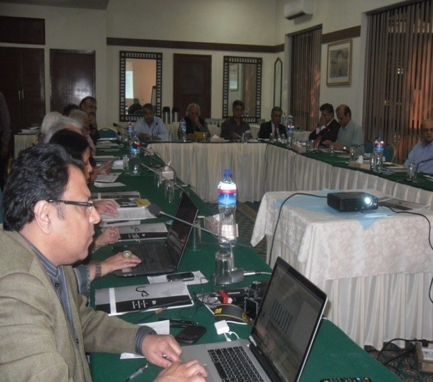

Produced by DANIDA
Project - More Women in Media
Participants - 19

In 2005, Uks Research Centre finalised and presented the first ever Gender-Sensitive Code-of-Ethics for
the Print Media in Pakistan. Though this code was a comprehensive document (and the only one) available to
consult on gender-sensitive content, it lacked clauses/guidelines specific to television, radio and the
Internet.
Uks undertook the formulation and implementation of a gender-sensitive code-of-ethics for the media,
inclusive of both print and electronic media, in Pakistan. This was one of the series of roundtable
consultations held with media stakeholders for the revision of this code-of-ethics.
The roundtable was an attempt to take up and debate how commercialisation, politicization, and lack of
professionalism was damaging women’s portrayal and development and why it was absolutely necessary to
revise and adopt ethical guidelines for gender-just media.
A total of nineteen media personnel – media owners, editors, bureau chiefs, members of journalists’ unions,
educationists and gender experts - both male and female, participated in this consultation.The issues that
came under discussion include:
- Gender sensitisation of media
- Gender sensitive curriculum in media schools
- Media ratings vs. responsible content
- Advertisements
- Popularity of soaps from other countries
- Negative portrayal of women
- Responsibility of hosts and presenters
- Media practitioners hail from the same society and have same social mindsets
- Media a socio-political reflection
- Ethics - Media’s responsibility
- Gender insensitive language and terminologies